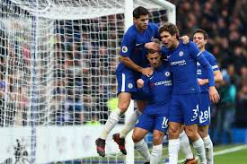

All is set for the most important and biggest Manchester derby in history. With both Manchester teams having big wins this week. The most important reason for this game is City is leading the table 8 points clear of Manchester United

Chelsea beat Newcastle United 3 - 1 yesterday. Eden HAzard and Morata were both on the Score sheet. The game started with Newcastle taking an early lead. But the blues angrily came into the game and killed it off before half-time
